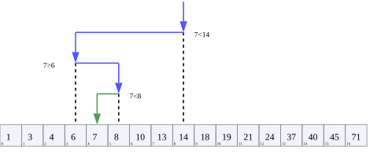

Tìm kiếm nhị phân
Nguồn
Giới thiệu
Tìm kiếm nhị phân là phương pháp cho phép tìm kiếm nhanh bằng cách chia đôi khoảng tìm kiếm. Ứng dụng phổ biến nhất của nó là tìm giá trị trong mảng đã sắp xếp, tuy nhiên chia đôi lại là ý tưởng then chốt trong nhiều bài toán điển hình khác.
Tìm kiếm trong mảng đã sắp xếp
Bài toán cơ bản nhất dẫn đến tìm kiếm nhị phân như sau. Cho một mảng đã sắp xếp \(A_0 \leq A_1 \leq \dots \leq A_{n-1}\), kiểm tra xem \(k\) có xuất hiện trong dãy không. Cách đơn giản nhất là kiểm tra từng phần tử một và so sánh với \(k\) (hay còn gọi là tìm kiếm tuyến tính). Cách này chạy trong \(O(n)\), nhưng không tận dụng được tính chất của mảng đã được sắp xếp.

Tìm kiếm nhị phân giá trị 7 trong một mảng đã sắp xếp tăng dần.
Hình ảnh này của AlwaysAngry được sử dụng theo license CC BY-SA 4.0.
Giờ giả sử ta biết hai chỉ số \(L < R\) sao cho \(A_L \leq k \leq A_R\). Vì mảng đã sắp xếp, ta có thể suy ra rằng \(k\), hoặc là xuất hiện trong \(A_L, A_{L+1}, \dots, A_R\), hoặc là không xuất hiện trong mảng. Nếu ta chọn một chỉ số bất kỳ \(M\) sao cho \(L < M < R\) và kiểm tra xem \(k\) nhỏ hơn hay lớn hơn \(A_M\). Ta có hai trường hợp:
- \(A_L \leq k \leq A_M\). Trong trường hợp này, ta thu nhỏ bài toán từ \([L, R]\) thành \([L, M]\);
- \(A_M \leq k \leq A_R\). Trong trường hợp này, ta thu nhỏ bài toán từ \([L, R]\) thành \([M, R]\).
Khi không thể chọn \(M\), tức là khi \(R = L + 1\), ta so sánh trực tiếp \(k\) với \(A_L\) và \(A_R\). Nếu không, ta muốn chọn \(M\) sao cho đoạn được xét sẽ co về thành một phần tử nhanh nhất có thể trong trường hợp xấu nhất.
Vì trong trường hợp xấu nhất ta sẽ luôn thu nhỏ về đoạn lớn hơn trong hai đoạn \([L, M]\) và \([M, R]\). Do đó, việc thu nhỏ này sẽ từ \(R-L\) xuống \(\max(M-L, R-M)\). Để tối thiểu hóa giá trị này, ta nên chọn \(M \approx \frac{L+R}{2}\), khi đó
Nói cách khác, từ góc nhìn trường hợp xấu nhất, để tối ưu ta luôn chọn \(M\) ở giữa \([L, R]\) và chia đôi nó. Vì vậy, đoạn của ta sẽ giảm một nửa ở mỗi bước cho đến khi có kích thước là \(1\). Vậy nếu quá trình cần \(h\) bước, cuối cùng nó giảm hiệu \(R\) và \(L\) từ \(R-L\) xuống \(\frac{R-L}{2^h} \approx 1\), cho ta phương trình \(2^h \approx R-L\).
Lấy \(\log_2\) hai vế, ta được \(h \approx \log_2(R-L) \in O(\log n)\).
Số bước logarit sẽ tốt hơn đáng kể so với tìm kiếm tuyến tính. Ví dụ, với \(n \approx 2^{20} \approx 10^6\) bạn cần khoảng một triệu thao tác cho tìm kiếm tuyến tính, nhưng chỉ khoảng \(20\) thao tác với tìm kiếm nhị phân.
Cận dưới và cận trên
Thường sẽ tiện nếu ta tìm vị trí của phần tử đầu tiên lớn hơn hoặc bằng \(k\) (gọi là cận dưới của \(k\) trong mảng) hoặc vị trí phần tử đầu tiên lớn hơn \(k\) (gọi là cận trên của \(k\)) thay vì vị trí chính xác của phần tử đó.
Cận dưới và cận trên cùng nhau tạo ra một nửa khoảng (có thể rỗng) các phần tử mảng bằng \(k\). Để kiểm tra xem \(k\) có trong mảng không, chỉ cần tìm cận dưới của nó và kiểm tra xem phần tử tương ứng có bằng \(k\) không.
Cài đặt
Giải thích ở trên cho ta một cái nhìn sơ lược về thuật toán. Còn về phần cài đặt chi tiết, ta cần phải chính xác hơn một tí.
Ta sẽ duy trì một cặp \(L < R\) sao cho \(A_L \leq k < A_R\). Nghĩa là khoảng tìm kiếm là \([L, R)\). Ta dùng nửa khoảng ở đây thay vì đoạn \([L, R]\) vì nó cần ít xử lý ở trường hợp biên hơn.
Khi \(R = L+1\), ta có thể suy ra từ định nghĩa trên rằng \(R\) là cận trên của \(k\). Sẽ tiện hơn nếu khởi tạo \(R\) bằng chỉ số sau phần tử cuối, tức \(R=n\) và \(L\) bằng chỉ số trước phần tử đầu, tức \(L=-1\). Việc này ok, miễn là ta không bao giờ truy xuất \(A_L\) và \(A_R\) trực tiếp trong cài đặt, về hình thức coi như \(A_L = -\infty\) và \(A_R = +\infty\).
Cuối cùng, để cụ thể về giá trị \(M\) ta chọn, ta sẽ dùng \(M = \lfloor \frac{L+R}{2} \rfloor\).
Khi đó ta có thể cài đặt như sau:
... // a là mảng đã sắp xếp được lưu lần lượt là a[0], a[1], ..., a[n-1]
int l = -1, r = n;
while (r - l > 1) {
int m = (l + r) / 2;
if (k < a[m]) {
r = m; // a[l] <= k < a[m] <= a[r]
} else {
l = m; // a[l] <= a[m] <= k < a[r]
}
}
Trong quá trình thực thi thuật toán, ta không bao giờ truy xuất \(A_L\) hay \(A_R\), vì \(L < M < R\). Cuối cùng, \(L\) sẽ là chỉ số của phần tử cuối cùng không lớn hơn \(k\) (hoặc \(-1\) nếu không có phần tử nào như vậy) và \(R\) sẽ là chỉ số của phần tử đầu tiên lớn hơn \(k\) (hoặc \(n\) nếu không có phần tử nào như vậy).
Lưu ý. Tính m bằng m = (r + l) / 2 có thể dẫn đến tràn số nếu l và r là hai số nguyên dương, và lỗi này tồn tại khoảng 9 năm trong JDK như mô tả trong bài blog này. Một số cách khác bao gồm viết m = l + (r - l) / 2 luôn đúng với số nguyên dương l và r, nhưng vẫn có thể tràn nếu l là số âm. Nếu bạn dùng C++20, ta có cách thay thế dưới dạng m = std::midpoint(l, r), cái này luôn chạy đúng.
Tìm kiếm trên hàm mệnh đề bất kỳ
Cho \(f : \{0,1,\dots, n-1\} \to \{0, 1\}\) là hàm boolean định nghĩa trên \(0,1,\dots,n-1\) sao cho nó đơn điệu tăng, tức là
Theo cách mô tả ở phần trước, tìm kiếm nhị phân sẽ tìm phân hoạch của mảng theo hàm mệnh đề \(f(M)\), giữ giá trị boolean của biểu thức \(k < A_M\). Ta có thể sử dụng hàm mệnh đề đơn điệu bất kỳ thay vì \(k < A_M\), đặc biệt là khi việc tính \(f(k)\) gây tốn quá nhiều thời gian để thực sự tính cho mọi giá trị có thể. Nói cách khác, tìm kiếm nhị phân tìm chỉ số duy nhất \(L\) sao cho \(f(L) = 0\) và \(f(R)=f(L+1)=1\) nếu điểm chuyển tiếp như vậy tồn tại, hoặc cho ta \(L = n-1\) nếu \(f(0) = \dots = f(n-1) = 0\) hoặc \(L = -1\) nếu \(f(0) = \dots = f(n-1) = 1\).
Để chứng minh tính đúng đắn, giả sử điểm chuyển tiếp tồn tại, tức \(f(0)=0\) và \(f(n-1)=1\): Cài đặt sẽ duy trì bất biến vòng lặp \(f(l)=0, f(r)=1\). Khi \(r - l > 1\), cách chọn \(m\) đảm bảo \(r-l\) luôn giảm. Vòng lặp kết thúc khi \(r - l = 1\), cho ta điểm chuyển tiếp mong muốn.
... // f(i) là hàm boolean thoả f(0) <= ... <= f(n-1)
int l = -1, r = n;
while (r - l > 1) {
int m = (l + r) / 2;
if (f(m)) {
r = m; // 0 = f(l) < f(m) = 1
} else {
l = m; // 0 = f(m) < f(r) = 1
}
}
Chặt nhị phân đáp án
Tình huống như vậy thường xảy ra khi ta được yêu cầu tính một giá trị nào đó, nhưng ta chỉ có khả năng kiểm tra liệu giá trị này có ít nhất bằng \(i\) không. Ví dụ, cho mảng \(a_1,\dots,a_n\) và bạn được yêu cầu tìm trung bình cộng làm tròn xuống lớn nhất
trong tất cả các cặp \(l,r\) sao cho \(r-l \geq x\). Một trong những cách đơn giản để giải bài toán này là kiểm tra xem đáp án có ít nhất bằng \(\lambda\) không, tức là liệu có cặp \(l, r\) sao cho điều sau đúng:
Biểu thức tương đương
vì vậy giờ ta cần kiểm tra xem có mảng con nào của mảng mới \(a_i - \lambda\) có độ dài ít nhất \(x+1\) với tổng không âm hay không, ta có thể giải bằng cách dùng tổng tiền tố.
Tìm kiếm liên tục
Cho \(f : \mathbb R \to \mathbb R\) là hàm thực liên tục trên đoạn \([L, R]\).
Không mất tính tổng quát, giả sử \(f(L) \leq f(R)\). Từ định lý giá trị trung gian suy ra rằng với mọi \(y \in [f(L), f(R)]\) tồn tại \(x \in [L, R]\) sao cho \(f(x) = y\). Lưu ý rằng, khác với các phần trước, hàm không bắt buộc phải đơn điệu.
Giá trị \(x\) có thể được xấp xỉ trong phạm vi \(\pm\delta\) trong thời gian \(O\left(\log \frac{R-L}{\delta}\right)\) với bất kỳ giá trị cụ thể nào của \(\delta\). Ý tưởng về cơ bản giống nhau, nếu ta lấy \(M \in (L, R)\) thì ta có thể thu nhỏ khoảng tìm kiếm thành \([L, M]\) hoặc \([M, R]\) tùy thuộc vào \(f(M)\) có lớn hơn \(y\) hay không. Một ví dụ phổ biến ở đây là tìm nghiệm của đa thức bậc lẻ.
Ví dụ, cho \(f(x)=x^3 + ax^2 + bx + c\). Khi đó \(f(L) \to -\infty\) và \(f(R) \to +\infty\) khi \(L \to -\infty\) và \(R \to +\infty\). Điều này có nghĩa là luôn có thể tìm \(L\) đủ nhỏ và \(R\) đủ lớn sao cho \(f(L) < 0\) và \(f(R) > 0\). Khi đó, có thể tìm bằng tìm kiếm nhị phân khoảng nhỏ tùy ý chứa \(x\) sao cho \(f(x)=0\).
Tìm kiếm với lũy thừa của 2
Một cách khác để thực hiện tìm kiếm nhị phân là, thay vì duy trì một đoạn, ta duy trì con trỏ hiện tại \(i\) và lũy thừa hiện tại \(k\). Con trỏ bắt đầu tại \(i=L\) và sau đó ở mỗi bước lặp ta kiểm tra hàm mệnh đề tại điểm \(i+2^k\). Nếu hàm mệnh đề vẫn bằng \(0\), con trỏ được tiến từ \(i\) đến \(i+2^k\), ngược lại nó giữ nguyên, sau đó lũy thừa \(k\) giảm đi \(1\).
Mô hình này được sử dụng rộng rãi trong các bài toán liên quan đến cây, như tìm tổ tiên chung gần nhất của hai đỉnh hoặc tìm tổ tiên của một đỉnh cụ thể có độ cao nhất định. Nó cũng có thể được điều chỉnh để ví dụ tìm phần tử khác \(0\) thứ \(k\) trong cây Fenwick.

{kind=link}
{kind=link}